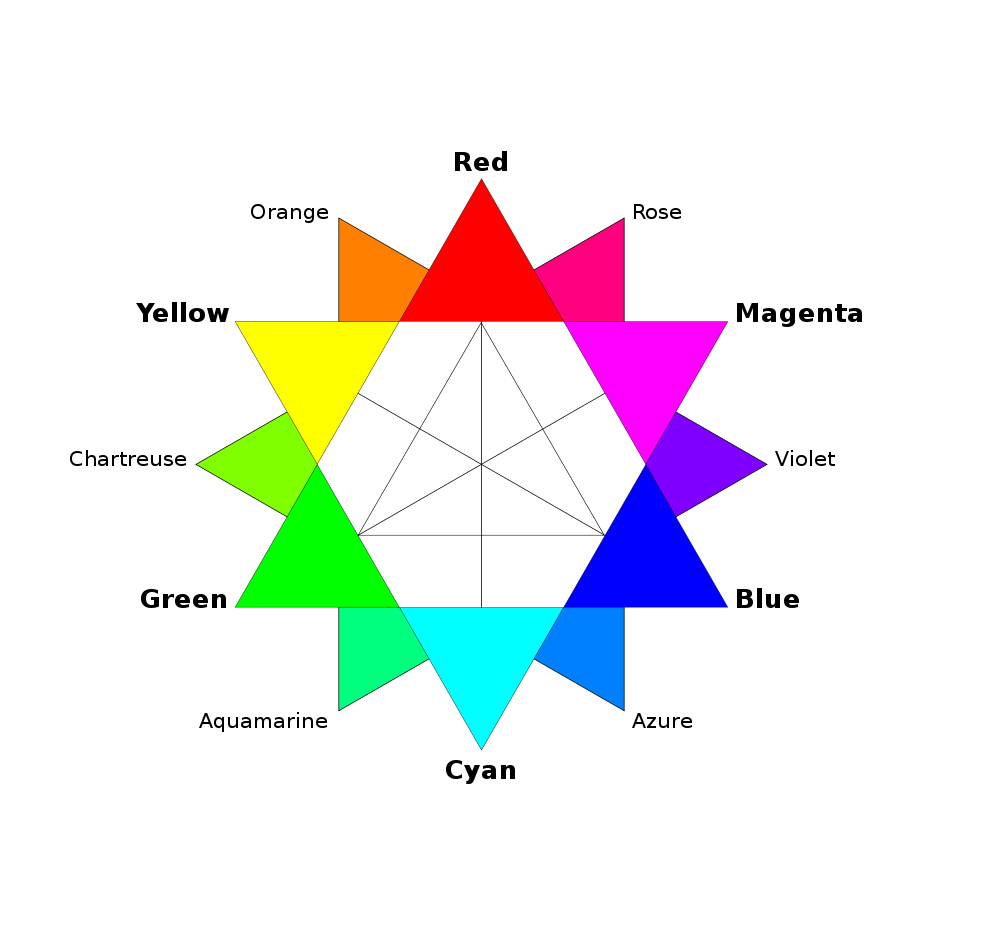
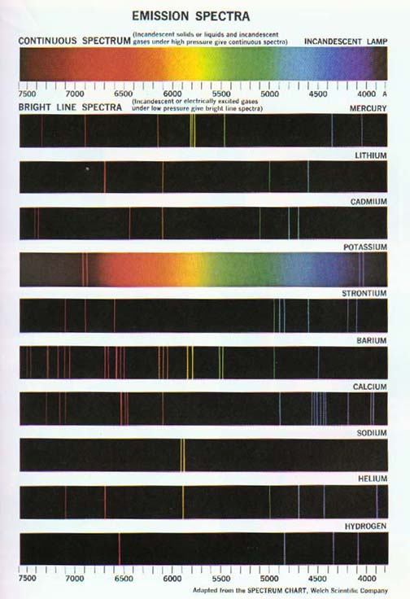
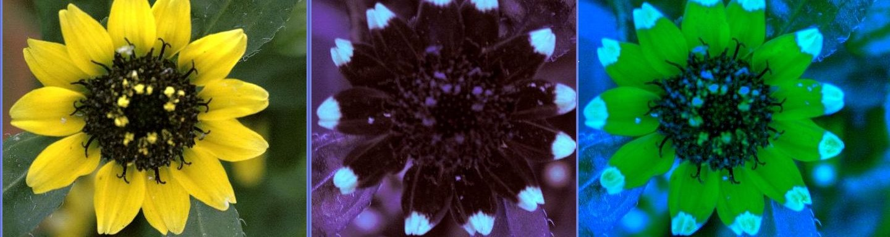
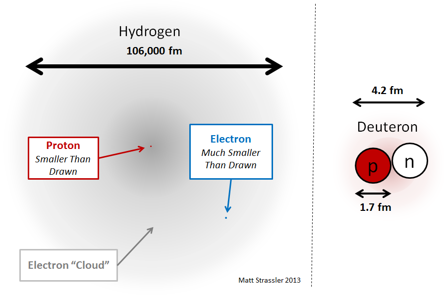

Colour
by Ates Goral
Everything About Colour
by Ates Goral
Everything You Think You Know About Colour
by Ates Goral
Everything I Think You Think You Know About Colour
by Ates Goral
Some Random Things I'd Like to Share About Colour
by Ates Goral
Primary Colours
What are the primary colours "in light"?
RGB
Red
Green
Blue
You can make any colours with these
Primary
- Red
- Green
- Blue
Secondary
- Yellow = Red + Green
- Cyan = Green + Blue
- Magenta = Blue + Red
RGB Colour Star
Additive Colour Model
- Start off with darkness
- Add light sources of various wavelengths and intensities
Speaking of wavelengths...
The Sun
- Informally designated as a yellow dwarf star
- But in actuality it is white
- It's the reflections and refractions in the atmosphere that make it look yellowish (and the atmosphere blueish)
Electromagnetic Spectrum
Electromagnetic Spectrum
- Light from the Sun is a continuous spectrum
- It's definitely not "RGB" — It's the humans (and a bunch of other animals) that see in "RGB"
- And it's not uniform
Solar Emission Intensity by Wavelength
Continuous Spectrum
Refraction
Discontinuous Spectra
Sodium Lamps
Physiology of Colour Vision
The Eye
The Retina

The Retina
- The retina is lined with cones and rods
- Rods: lightness
- Cones: hue (and don't work well in low light)
Visual Phototransduction
Is a process by which light is converted into electrical signals in the rod cells, cone cells and photosensitive ganglion cells of the retina of the eye.
Visual Phototransduction
Process
To understand the photoreceptor's behaviour to light intensities, it is necessary to understand the roles of different currents. There is an ongoing outward potassium current through nongated K+-selective channels. This outward current tends to hyperpolarize the photoreceptor at around -70 mV (the equilibrium potential for K+)...
tl;dr
... All-trans retinal cannot be synthesised by humans and must be supplied by vitamin A in the diet. Deficiency of all-trans retinal can lead to night blindness.
Vitamin A FTW!
Cones
Three types in humans (trichromatic vision):
- Long (L)
- Medium (M)
- Short (S)
(Based on the ordering of the wavelengths of the peaks of their spectral sensitivities)
Spectral Sensitivities
Mapping of Cones to Colours
They actually don't correspond to particular colours as we know them.
Colour perception is a complex process involving the processing of the differential output from cones and rods.
- Long (L) ~560nm — "Red" — Yellowish Green (LOL WUT?)
- Medium (M) ~530nm — "Green" — Bluish Green
- Short (S) ~420nm — "Blue" — Purplish Blue
Long (L) also has a secondary response in the violet high frequencies.
Do Dogs See The World Black and White?
No.
They're colour blind, but do see colour.
Only it's not RGB — They have Dichromatic Vision.
Some colour blind people also are dichromats.
Different Types of Colour Vision
Monochromatic :(
Dichromatic
Trichromatic
Tetrachromatic
Pentachromatic :D
Bee Vision (Simulated)
Colour Blindness
It's not black and white (no pun intended).
- Acquired or inherited
- Monochromacy (Rod/Cone)
- Dichromacy (Protanopia/Deuteranopia/Tritanopia)
- Anomalous Trichromacy (Protanomaly/Deuteranomaly/Tritanomaly)
Most are sex-linked, appearing predominantly in males.
Colour Blindness
ColorADD
Colour Awesomeness
Some women have a fourth cone — They are tetrachromats.
They can see 99 million more colours than the average human.
And it's not very uncommon (12%).
White
Don't need RGB to produce a sensation of white.
Two complementary colours can do it.
For example: Blue and Yellow
White
What Do Cows Drink?
LOL NO
What are the primary colours "in paint"?
RYB
Red
Yellow
Blue
"You can make any colours with these"
Primary
- Red
- Yellow
- Blue
Secondary
- Orange = Red + Yellow
- Green = Yellow + Blue
- Violet/Purple = Blue + Red
RYB Colour Star
RYB
- A former standard
- Used in art and art education, particularly in painting
- Predates modern scientific colour theory
CMY
Modern scientific colour theory.
Cyan (Process Blue)
Magenta (Process Red)
Yellow
You can make any colours with these
Primary
- Cyan
- Magenta
- Yellow
Secondary
- Blue = Cyan + Magenta
- Red = Magenta + Yellow
- Green = Yellow + Cyan
Subtractive Colour Model
- Start off with a white surface
- Add pigments that absorb various wavelength of incident light at various intensities
Subtractive Colour Model
The Mechanics of Light Reflectance
The Empty Atom
Electron Excitation
Electron Emission
CMYK
Cyan
Magenta
Yellow
Black
CMYK
K (black) is added to:
- Cover unwanted tints in dark areas as a result of imperfect transparency of commercial inks
- Improve sharpness due to imperfect registration of the 3 colour elements
- Cut costs, since black inks are typically cheaper
Purely photographic colour processes almost never include a K component.
More Colour Spaces
- RGB (sRGB, Adobe RGB, Adobe Wide Gamut RGB, ...)
- CMYK
- HSL/HLS, HSV/HSB, HSI
- CIELAB/L*a*b*/Lab
- CIE 1931 XYZ
- CIELUV
- CIEUVW
- YIQ, YUV, YDbDr
- YPbPr, YCbCr
- xvYCC